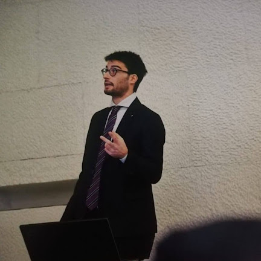

Career, education & CV

MSCA Global Postdoctoral Fellow · Politecnico di Torino
I grew up in Campobasso, a small town in one of Italy's quieter regions, where I developed an early passion for learning, science, and sport. When I began my studies at Politecnico di Torino, I was admitted to the Collegio Einaudi, a university residence for high-achieving students, which became an unexpectedly formative experience — not just academically, but personally. Living alongside motivated, curious people from different backgrounds shaped how I think about collaboration and intellectual exchange.
During my bachelor's degree I was selected for the POLITO Young Talent programme, which gave me access to additional courses and exchange opportunities. One of these took me to the École Centrale Paris for a semester — my first time abroad, and the experience that convinced me I wanted to build an international career. I also joined the POLITO Sailing Team, where working on the hull design and dynamics of a racing sailboat taught me more about engineering systems than any lecture could.
For my master's degree, I spent a year at the Technische Universität München as an Erasmus student before completing my thesis at DLR Lampoldshausen — Germany's main rocket propulsion research site. There I ran detailed simulations of a small liquid-oxygen/methane combustor as part of a joint project between the French and German space agencies. That was the moment I realised computational research was my path.
My doctorate at the Universität der Bundeswehr München, funded by Airbus Defence and Space, focused on understanding and improving how computers simulate the complex, swirling flows that form over swept wing surfaces — a problem with direct relevance to the design of high-agility military aircraft. I combined large-scale numerical simulations, turbulence modelling, and machine learning over four years, using some of Europe's largest computing facilities. The work earned a final grade of Summa cum Laude.
During my PhD I twice visited the University of Melbourne — a group that has since become a key partner in LINERFUN — first to explore hybrid simulation and machine-learning approaches, and later with a DAAD fellowship to work on evolutionary optimisation methods. These stays reinforced my interest in data-driven research and opened the door to the collaboration that now forms the backbone of my fellowship.
After completing my doctorate I joined Leonardo Innovation Labs in Italy, where I worked on digital twin technologies for high-speed aerospace systems. In May 2026 I began the LINERFUN fellowship, which brings together everything I have worked on — simulation, machine learning, and aeroacoustics — in what I hope will be a meaningful contribution to quieter aviation.
Outside of research, I value sport, travel, and the kinds of friendship that form when people work towards something together. I am passionate about open science, international collaboration, and the idea that good engineering should ultimately serve people.
Politecnico di Torino · ONERA · University of Melbourne. Developing high-fidelity simulation tools for acoustic liner design in next-generation jet engines.
Leonardo Innovation Labs, Digital Twin and Advanced Simulation, Italy. High-fidelity computational fluid dynamics for aerospace digital twins, including aeroacoustics and high-speed compressible flows.
University of Melbourne (DAAD fellowship). Gene Expression Programming for multi-objective optimisation in computational design workflows.
Universität der Bundeswehr München (Airbus Defence and Space fellowship). Turbulence modelling for transonic vortical flows over swept leading edges: scale-resolving simulations, shock–vortex interactions, machine learning augmentation of turbulence models.
University of Melbourne. Hybrid computational fluid dynamics and machine learning for flow prediction.
DLR Lampoldshausen. High-fidelity simulation of a sub-scale liquid oxygen / methane rocket combustor, within a joint French–German space agency research programme.
Politecnico di Torino. Mechanical Machines course: thermodynamic cycles, machine dynamics, performance analysis.
Final grade: Summa cum Laude (awarded 05/08/2024). Thesis: Efficient Turbulence Modelling for Vortical Flows from Swept Leading Edges. Funded by Airbus Defence and Space.
Erasmus+ programme, EU and POLITO scholarship.
Final grade: 110/110 cum laude. Thesis: Numerical simulation of a sub-scale rocket combustor (CNES–DLR cooperation). Focus on gas dynamics, aerodynamics, and propulsion.
EU Young Talents programme, scholarship by Politecnico di Torino.
Final grade: 110/110 cum laude. Member of the POLITO Young Talent Project (top 200 undergraduates). Thesis on Lagrange points in space.
University residential college recognised by the Italian Ministry of Education as a high-quality cultural institution. Admission by merit.
During my doctoral research (2020–2024) I supervised three Master's students and two Bachelor's students at the Universität der Bundeswehr München, guiding their work on turbulence modelling and computational aerodynamics.
Programming
Simulation tools
Methods
Languages